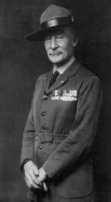
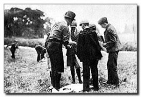
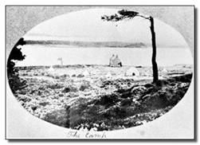

<div class="container-fluid">
    <div class="row">

        <div class="card text-bg-light">
            <div class="card-body">
                <h1 class="titCard">Baden Powell</h1>
                <h4 class="col-lg-12 col-md-12 col-sm-12">
                    <div class="row">
                        <p class="textoP col-lg-8 col-md-8 col-sm-8"><strong>Robert Stephenson Smith Lord Baden-Powell
                                of Gilwell</strong> conegut per les
                            sigles B.P., naixquè al <a class="linkS"
                                href="https://www.google.es/maps/@51.5123834,-0.1737249,3a,90y,316.04h,107.53t/data=!3m6!1e1!3m4!1siM_GRD8IIOnx2fMv5Lfp3Q!2e0!7i13312!8i6656"
                                target="#&quot;"> nº 6 de Stanhope Street (actual nº 11 de Stanhope Terrace) </a>, al
                            barri
                            londinenc de Paddington, el 22 de febrer del 1857. Era el sisè fill home, i el huitè dels
                            deu fills
                            del reverend H.G. Baden-Powell, professor a l'Universitat d'Oxford. Sa mare era filla del
                            almirant
                            W. T. Smyth i néta de Joseph Brewer, explorador de América. El seu fadrí fou Robert
                            Stephenson, fill
                            de George Stephenson, un pioner en el transport por ferrocarril. Baden Powell va ser, per
                            tant, el
                            descendent d'un religios, per un costat i d'un aventurer colonitzador del Nou Món, per
                            l'altre.<br><br>Tot açò per a que, l'endemà, els nostres scouts siguen adults plenament
                            integrats en la societat, amb
                            personalitat propia i un esperit de compromis constructiu. Centenars de joves han passat per
                            la
                            nostra
                            Associació, creixent en un ambient sa i segur, envoltats d'amics i aprenent a viure tant a
                            la ciutat
                            com
                            a la naturalesa.
                        </p>
                        
                    </div>
                </h4>

                <h1 class="titCard">El xiquet Baden Powell</h1>
                <h4 class="col-lg-12 col-md-12 col-sm-12">
                    <div class="row">
                        <p class="textoP col-lg-8 col-md-8 col-sm-8">B.P. quedà orfe de pare als tres anys d'edat,
                            esdevenint la família sense
                            massa recursos econòmics. B.P. va rebre el seu primer ensenyament escolar de sa mare, i més
                            endavant començà a assistir a l'escola de <a class="linkS"
                                href="http://www.rosehillschool.co.uk/" target="#&quot;">Rose Hill</a>, a Tunbridge
                            Wells. Als tretze anys va obtindre una beca
                            per a estudiar a l'escola <a class="linkS" href="http://www.charterhouse.org.uk/"
                                target="#&quot;">Charterhouse</a>. A l'inici aquesta escola es trobava a Londres, però
                            al 1872 es traslladà al camp, concretament a Godalming, a Surrey.<br><br>
                            B.P. no va ser un estudiant distingit, ja que els seus professors descobriren
                            la seua facilitat per a dormir durant les lliçons. És un bon company i el que més i millors
                            iniciatives aporta a la colla d'estudiants. Sempre estava desitjant aprendre coses noves.
                            Tocava el piano i el violí. Actuava en obres teatrals fent qualsevol tipus de personatge.

                        </p>
                        
                        <p class="col-lg-12 col-md-12 col-sm-12 textoP mt-3">El fet de trobar-ser més a prop de la
                            naturalesa
                            resultà decissiu per a sa vida. Els llocs més freqüents per als seus jocs son els boscos que
                            rodejen l'escola. A Charterhouse va començar a desenvolupar el seu interés per l'exploració
                            i el coneiximent de la naturalesa. Als boscos de les rodalies de l'escola, B.P. s'amagava
                            dels seus mestres, caçava i cuinava conills sense delatar el seu amagatall. Durant les
                            vacances tampoc perdía el temps. Sempre anava cercant aventures amb els seus germans. En una
                            ocasió, efectuaren una eixida en barca por la costa sur d'Anglaterra. També remontaren el
                            Tàmesis en canoa fins al naiximent del ríu. Tals aventures a l'aire lliure certament no eren
                            freqüents entre els joves d'aquella època. Les tècniques i arts que va aprendre li van ser
                            de molta utilitat en la seva vida posterior. En resum, va viure una adolescència
                            privilegiada, sempre a l'aire lliure, en companyia dels seus germans, recorrent i acampant
                            amb ells en molts llocs d'Anglaterra.</p>
                    </div>
                </h4>


                <h1 class="titCard">Carrera militar</h1>
                <h4 class="col-lg-12 col-md-12 col-sm-12">
                    <div class="row">
                        <p class="col-lg-8 col-md-8 col-sm-8 textoP">En acabar la seua educació, ja en 1876, es va
                            presentar a unes proves per entrar a l'exèrcit i
                            va treure el segon lloc per a Cavalleria entre centenars d'aspirants. De seguida se'l va
                            destinar a l'Índia, sense haver de passar pels cursos d'entrenament oficials, com subtinent
                            del
                            13è Regiment d'Hússars, del quin més endavant seria nomenat Coronel d'Honor.
                        </p>
                        
                        <p class="col-lg-8 col-md-8 col-sm-8 textoP">Entre les seues tasques, com un jove oficial especialitzat en l'exploració,
                            elaboració de mapes i reconeixement del terreny, estava la formació d'altres soldats per a
                            tals labors. Els mètodes de B.P. no eren ortodoxos per a aquells temps: dividia la tropa al
                            seu càrrec en petites unitats, a les quals anomenava patrulles. Aquestes patrulles
                            treballaven juntes sota la direcció d'un guia, que era el soldat més preparat de la mateixa.
                            En acabar una tasca es premiava aquells soldats o patrulles que ho fessin bé. Les insígnies
                            amb què B.P. recompensava la destresa dels seus pupils recordaven el símbol tradicional del
                            punt nord en la brúixola, una flor de lys molt semblant a l'actual emblema scout mundial. En
                            1883 és ascendit a capità, a l'edat de 26 anys.</p>
                    </div>
                </h4>


                <h4>

                    <br><br><br><br><br><br><br><br><br><br><br><br>
                    <p class="textoP">Tot açò per a que, l'endemà, els nostres scouts siguen adults plenament integrats
                        en la societat, amb
                        personalitat propia i un esperit de compromis constructiu. Centenars de joves han passat per la
                        nostra
                        Associació, creixent en un ambient sa i segur, envoltats d'amics i aprenent a viure tant a la
                        ciutat
                        com
                        a la naturalesa.</p>

                    <p class="textoP">El nostre Grup Scout es divideix per seccions, que agrupen als xiquets i joves per
                        edats, adaptant
                        les
                        activitats a les seues necesitats i gustos. Els JOVES CASTORS son xiquets i xiquetes de 5 a 8
                        anys,
                        mentre que a la MANADA estàn els que tenen entre 8 i 11 anys. A la TROPA els xics de 11 a 15
                        anys es
                        divideixen en quatre grups anomenats patrulles: dos de xiques i dos de xics. L'ESCOLTA la formen
                        els
                        nostres joves de 15 a 18 anys. Finalment trobem el CLAN per als majors de 18.</p>

                    <p class="textoP">Esta es la nostra pàgina web, a ella trobaràs noticies, fotos, enllaços a
                        contingut d'interés,
                        informació de les nostres activitats, revistes, o la forma de contactar amb nosaltres.
                        Benvinguts!
                    </p>
                </h4>
            </div>
        </div>

    </div>


</div>